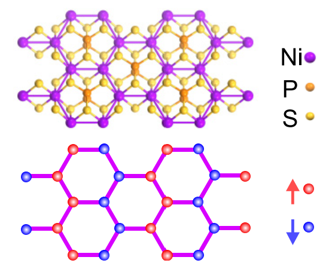

10. Observation of a Magnetic Phase Transition in Monolayer NiPS3

Lili Hu, Hao-Xin Wang, Yuzhong Chen, Kang Xu, Ming-Rui Li, Haiyun Liu, Peng Gu, Yubin Wang, Mengdi Zhang, Hong Yao, and Qihua Xiong [PDF]
Physical Review B 107, L220407 (2023)
Monolayer magnet of XY type composes a pivotal part of the two-dimensional magnetism. As an important suspected XY-type antiferromagnet, whether 1L NiPS3 exhibits magnetic order remains elusive. Herein by helicity-resolved Raman and ultrafast spectroscopy of NiPS3 from bulk to monolayer, we find that 1L NiPS3 is magnetically ordered with a Berezinskii-Kosterlitz-Thouless (BKT) transition at TBKT approximately 140 K. We have also performed large-scale density-matrix renormalization-group calculations to verify the ground state zigzag antiferromagnetic order and Monte Carlo simulation to confirm the BKT-transition temperature in 1L NiPS3. Our investigations establish 1L NiPS3 to be an XY antiferromagnet with a relatively high-temperature BKT transition, providing an important platform for investigating complex couplings and topological excitations.